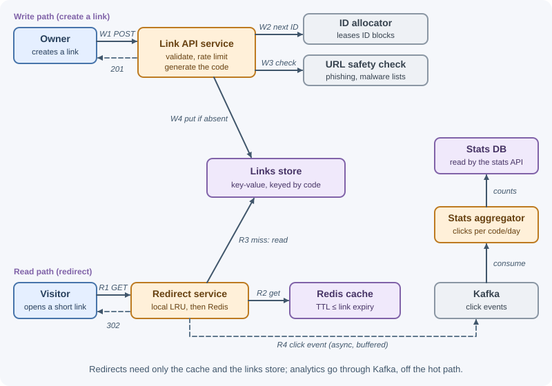
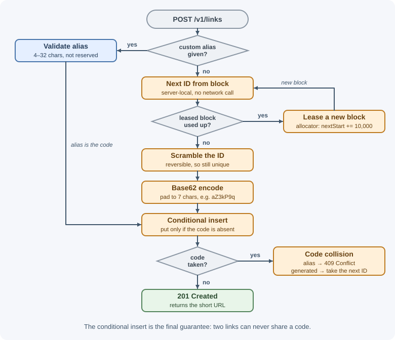

Case Study: URL Shortener¶
A URL shortener turns a long URL into a short one, such as
https://sho.rt/aZ3kP9q, and redirects visitors to the original. It looks
trivial, but at scale it exercises many core design skills: unique ID
generation, read-heavy caching, choosing redirect semantics, analytics
without slowing the hot path, and abuse prevention.
Requirements¶
Functional¶
- Create a short link for a long URL; return the short code and URL.
- Visiting a short link redirects to the original URL.
- Optional custom alias (
sho.rt/spring-sale). - Optional expiration date; expired links stop redirecting.
- Owners can see click analytics (total clicks, clicks per day, referrers, countries).
- Owners can disable or delete their links.
Non-functional¶
- Scale: 100 million new links per month; 100 redirects per link created (read:write ≈ 100:1).
- Latency: redirect handled in under ~50 ms at p99 on the server side.
- Availability: redirects 99.99%; link creation 99.9% is acceptable.
- Durability: a created link must never be lost or point somewhere else.
- Uniqueness: two links must never share a code.
- Analytics may lag by a few minutes (eventual consistency).
- Safety: prevent the service from being used to spread phishing or malware; codes should not be trivially enumerable.
Capacity estimates¶
Assumptions: 100 M links/month, 100:1 read:write, peak = 3× average, 500 bytes per link record, 5-year retention, 200 bytes per click event.
Writes: 10^8 / (2.5 × 10^6 s per month) ≈ 40 /s peak ≈ 120 /s
Reads: 40 × 100 ≈ 4,000 /s peak ≈ 12,000 /s
Links over 5 years: 100 M × 12 × 5 = 6 × 10^9 links
Link storage: 6 × 10^9 × 500 B = 3 TB (× 3 replicas ≈ 9 TB)
Code space (base62):
6 characters: 62^6 ≈ 5.7 × 10^10 (enough, but ~10% full after 5 years)
7 characters: 62^7 ≈ 3.5 × 10^12 (very roomy) → use 7
Cache (80/20 of a day's reads):
4,000 /s × 86,400 ≈ 3.5 × 10^8 reads/day
0.2 × 3.5 × 10^8 × 500 B ≈ 35 GB (upper bound)
Click events: 4,000 /s × 200 B = 800 KB/s ≈ 70 GB/day raw
Conclusions: modest write rate and total size; the challenges are read throughput, low redirect latency, high availability, and collision-free code generation. Raw analytics data grows fastest and should be aggregated.
API design¶
All management endpoints require authentication (API key or session) and are rate limited. See REST APIs.
Create a link
POST /v1/links
Authorization: Bearer <token>
Idempotency-Key: 5d1c... (optional; safe retries)
Content-Type: application/json
{ "longUrl": "https://example.com/blog/2026/11/very-long-article?utm_source=x",
"customAlias": "spring-sale", (optional)
"expiresAt": "2027-01-01T00:00:00Z" } (optional)
201 Created
Location: /v1/links/spring-sale
{ "code": "spring-sale",
"shortUrl": "https://sho.rt/spring-sale",
"longUrl": "https://example.com/blog/2026/11/very-long-article?utm_source=x",
"expiresAt": "2027-01-01T00:00:00Z" }
400 Bad Request invalid or unsafe URL, invalid alias format
409 Conflict alias already taken
429 Too Many Requests
Redirect
GET /aZ3kP9q
302 Found
Location: https://example.com/blog/2026/11/very-long-article?utm_source=x
Cache-Control: private, max-age=60
404 Not Found unknown code
410 Gone expired or disabled link
Analytics
GET /v1/links/aZ3kP9q/stats?from=2026-11-01&to=2026-11-07
200 OK
{ "code": "aZ3kP9q", "totalClicks": 18234,
"byDay": [ { "date": "2026-11-01", "clicks": 2410 }, ... ],
"topReferrers": [ { "referrer": "news.example", "clicks": 5120 } ],
"topCountries": [ { "country": "US", "clicks": 9012 } ] }
Disable / delete
DELETE /v1/links/aZ3kP9q → 204 No Content
Data model¶
links — the hot, key-value table. Every redirect is a lookup by
code.
| Field | Type | Notes |
|---|---|---|
code |
string (≤ 32) | Primary / partition key |
longUrl |
string (≤ ~2,048) | Destination |
ownerId |
string | Creator |
createdAt |
timestamp | |
expiresAt |
timestamp, nullable | Checked on every redirect |
status |
enum | active, disabled |
isCustom |
boolean | Custom alias or generated |
Indexes:
- Primary key on
code(unique; enforces no collisions). - Secondary index on
(ownerId, createdAt)for "list my links."
Storage choice: the access pattern is a single-key lookup at high volume,
which suits a horizontally partitioned key-value or wide-column store
(DynamoDB, Cassandra) partitioned by code. A relational database with read
replicas would also handle these numbers comfortably, especially behind a
cache; the key-value store is chosen for simple horizontal scaling and
built-in TTL support.
id_blocks — the ID range allocator's state (one row, or a coordination
service): { name: "links", nextStart: 1203000000 }.
Analytics:
click_events— an append-only stream (Kafka topic):code, timestamp, referrer, country (derived from IP, then discard the IP), user agent class.link_stats_daily— aggregated per(code, date): clicks, top referrers, countries, approximate unique visitors. Stored in an analytics or columnar store, queried by the stats endpoint.
High-level design¶

The redirect service and the link API are separate deployments: the redirect path is the critical, high-volume one and is scaled and protected independently.
Write path (create link):
- Authenticate, rate limit, and validate the URL (scheme
http/httpsonly, length limit, not pointing to the shortener itself). - Check the URL against malware and phishing lists.
- If a custom alias is given, validate its format and reserved words; otherwise generate a code (see deep dive 1).
- Conditional insert (
put if not existsoncode). On conflict: return409for an alias, or generate another code. - Return
201with the short URL.
Read path (redirect):
- Look up
codein a small in-process LRU cache, then Redis, then the links store. - If missing →
404(and cache the miss briefly). If expired or disabled →410. - Populate caches on a miss, with a TTL no later than
expiresAt. - Respond
302withLocation. - Emit a click event to a local buffer that is flushed to Kafka asynchronously — the redirect never waits for analytics.
Deep dives¶
1. Generating short codes¶

Codes use base62 (0–9, a–z, A–Z): URL-safe without escaping and
dense (7 characters ≈ 3.5 trillion values).
const ALPHABET = "0123456789abcdefghijklmnopqrstuvwxyzABCDEFGHIJKLMNOPQRSTUVWXYZ";
// Encode a non-negative BigInt as base62, left-padded to a fixed length
export function toBase62(value, length = 7) {
let result = "";
let n = value;
do {
result = ALPHABET[Number(n % 62n)] + result;
n /= 62n;
} while (n > 0n);
return result.padStart(length, "0");
}
toBase62(125n); // "0000021"
toBase62(3521614606207n); // "ZZZZZZZ" (62^7 − 1, the largest 7-character code)
Three ways to choose the number to encode:
a) Hash the long URL. Take SHA-256 (or MD5) of the URL, use the first 41 bits (62^7 ≈ 2^41.7, so 41 bits always fit in 7 characters), and encode them.
- The same URL always produces the same code (built-in deduplication — but two users shortening the same URL then share analytics and settings, which is usually undesirable; add the owner ID to the hash input).
- Collisions are possible when truncating a hash: different URLs can produce the same prefix. You must check, and on collision append a salt or counter and rehash — extra reads on the write path.
b) Counter with ID-range allocation. A global counter guarantees
uniqueness without collision checks, but a single counter incremented on
every write is a bottleneck and single point of failure. Instead, each API
server leases a block of IDs (for example, 10,000 at a time) from the
allocator by atomically advancing nextStart, then hands them out from
memory.
- No collisions, no extra lookups; the allocator is contacted once per 10,000 links.
- If a server crashes, the rest of its block is skipped — gaps are harmless.
- Sequential IDs produce guessable codes (
...aZ3kP9q,...aZ3kP9r), letting anyone enumerate links. Scramble the ID with a reversible (bijective) transform before encoding — for example, multiply by a large constant that has no common factor with 62^7, modulo 62^7, or apply a small Feistel cipher. This is obfuscation, not security: links are public capabilities, so private content must not rely on code secrecy.
c) Random codes. Pick 7 random base62 characters and conditionally insert; retry on conflict. With 6 billion codes in a space of 3.5 trillion, a new random code collides with probability ≈ 6 × 10^9 / 3.5 × 10^12 ≈ 0.17%, so retries are rare and cheap. Codes are naturally unguessable.
Choice: ID-range allocation with scrambling for predictable, collision-free generation (option b), or random codes with conditional insert (option c) if simplicity is preferred. Either way, the conditional insert on the primary key is the final guarantee of uniqueness — it also protects against a generated code matching an existing custom alias.
2. 301 versus 302 and analytics¶
301 Moved Permanently |
302 Found (or 307) |
|
|---|---|---|
| Browser behavior | Cacheable by default (RFC 9110 calls 301 "heuristically cacheable"), and browsers often keep it for a long time; later clicks may skip the server | Not cached unless Cache-Control or Expires allows it, so clicks reach the server unless you set a max-age |
| Analytics | Undercounts repeat visits | Every click is seen, apart from repeats within any max-age you allow |
| Changing or disabling a link | Visitors with a cached 301 keep going to the old target | Takes effect immediately |
| Server load | Lower | Higher (mitigated by caching) |
Because analytics, disabling abusive links, and editable destinations are
requirements, this design uses 302 with a short Cache-Control max-age.
(301/308 suit links that are truly permanent and where analytics do not
matter.) If a CDN caches redirects at the edge, analytics must come from CDN
logs instead.
Analytics never block the redirect: the handler appends an event to an in-memory buffer flushed to Kafka every few hundred milliseconds. A stream processor aggregates per code and day; unique visitors can be approximated with HyperLogLog. If Kafka is down, events are buffered briefly and then dropped — losing some analytics is acceptable; failing redirects is not.
3. Read-heavy caching¶
- Cache-aside in Redis:
link:{code}→{ longUrl, expiresAt, status }with a TTL (for example, 24 hours, never beyondexpiresAt); ~35 GB fits a small cluster. See caching strategies. - In-process LRU of a few thousand entries per redirect server absorbs viral links (hot keys) without hitting Redis at all.
- Negative caching: cache "not found" for 30–60 seconds so bots scanning random codes do not hammer the database.
- Invalidation: on disable or delete, delete the Redis key; the short in-process TTL bounds staleness elsewhere. See invalidation and expiration.
- Stampede protection: when a hot key expires, let one request reload it (request coalescing) while others wait briefly. See cache failure modes.
- If Redis fails, redirect servers fall back to the links store, which must be provisioned for the extra load (or shed load gracefully).
4. Custom aliases and expiration¶
Aliases: validate length (for example, 4–32), characters
([A-Za-z0-9-_]), and a reserved list (api, admin, login, help,
offensive terms). Insert with the same conditional write; conflicts return
409. Aliases and generated codes share one namespace, which the primary key
protects.
Expiration:
- Check
expiresAton every redirect; return410 Goneonce expired. - Never cache a link past its expiry.
- Remove expired rows with the store's TTL feature (DynamoDB TTL, MongoDB TTL indexes) or a nightly batch job.
- Do not recycle expired codes for new links: old copies of the short URL remain in emails and documents and would silently point to someone else's content.
5. Abuse prevention¶
- Rate limit creation per account, API key, and IP; require sign-up or a CAPTCHA for anonymous creation. See rate limiting.
- Check destinations against malware and phishing lists (such as Google Safe Browsing) at creation and re-check periodically, since a domain can turn malicious later.
- Allow only
httpandhttps(nojavascript:ordata:URLs); block redirects to the shortener's own domain and to other shorteners to prevent loops and chains. - Disable reported or flagged links quickly (status →
disabled, cache invalidated); optionally show a warning interstitial page. - Non-enumerable codes (deep dive 1) stop easy scraping of all links.
- Provide an abuse reporting endpoint and audit trail.
Bottlenecks and trade-offs¶
- What fails first: the links store under read load if the cache is cold or down. Mitigation: layered caches, provisioning for cache-miss load, and load shedding.
- Hot keys: a viral link concentrates traffic on one cache shard and one partition; in-process caching and short CDN caching spread it.
- Availability of redirects: the redirect path depends only on its own servers, the cache, and the links store (replicated across zones). Analytics, the ID allocator, and URL checking are off the redirect path.
- ID allocator: an outage only stops creation after servers use up their leased blocks; run it on a replicated store.
- Multi-region: replicate the links store to each region (global tables or read replicas) so redirects are served locally; creation can write to one home region, with region-prefixed ID ranges if multiple regions write. New links may take a moment to appear in other regions — acceptable here.
- Alternatives considered: hashing (rejected: collision handling and shared-code semantics); 301 redirects (rejected: lose analytics and control); a single relational database (viable at this size, but sharding later is harder than with a partitioned key-value store).
- Trade-off accepted: 302 increases server traffic compared with 301, in exchange for accurate analytics and the ability to disable links.
Real-world references¶
- Google's goo.gl shows why link permanence is a core requirement. In 2018 Google stopped new link creation for most users but promised that "all existing links will continue to redirect to the intended destination" (Transitioning Google URL Shortener to Firebase Dynamic Links). In 2024 it announced that goo.gl links would stop working after August 25, 2025, first showing an interstitial warning page on a growing share of links; in August 2025 it revised the plan to preserve actively used links, noting they "are embedded in countless documents, videos, posts and more" (Google URL Shortener links will no longer be available). Lesson: short links outlive products, so plan for long-term redirect availability and never recycle codes.
- Twitter's Snowflake is a well-known example of the ID-generation side of this design: unique 64-bit, roughly time-ordered IDs generated without central coordination, from a timestamp, a machine ID, and a sequence (Snowflake README). Encoding such IDs in base62 is one way to produce short codes.
In production¶
- A viral link slows redirects. Symptom: p99 redirect latency jumps while one code dominates traffic. Detect: per-key request counts, one Redis shard's CPU rising. Cause: a hot key concentrated on one cache shard and one database partition. Fix: in-process LRU caches on redirect servers and short CDN caching of the redirect.
- Bots scanning codes. Symptom: database read load rises with a surge
of
404responses. Detect: 404 rate per client and overall. Cause: scanners guessing codes, each a cache miss. Fix: negative caching, per-IP rate limits, non-sequential codes. - The domain gets flagged for phishing. Symptom: browsers or email providers warn about or block all your short links. Detect: abuse reports, safe-browsing status checks, sudden drops in click-through. Cause: attackers using the service to hide malicious destinations. Fix: scan destinations at creation and periodically, disable links fast, rate-limit anonymous creation.
- Link creation fails. Symptom:
5xxon create while redirects work. Detect: error rate on the create endpoint, allocator errors. Cause: the ID allocator is unavailable and servers have used up their leased blocks. Fix: larger blocks, a replicated allocator store, alerts on low remaining block capacity. - Stale analytics. Symptom: owners see click counts hours behind. Detect: Kafka consumer lag. Cause: the aggregator cannot keep up with click events. Fix: scale consumers; redirects remain unaffected because analytics are off the hot path.
Revision questions¶
- Why are 7 base62 characters enough for this system, and how did you calculate it?
- Compare hashing, counter ranges, and random codes for generating short codes. How is uniqueness ultimately guaranteed?
- Why does this design use 302 instead of 301, and what does it cost?
- How do in-process caching, Redis, and negative caching each protect the database?
- Why should expired codes not be reused?
- Which components are on the redirect path, and why were analytics kept off it?